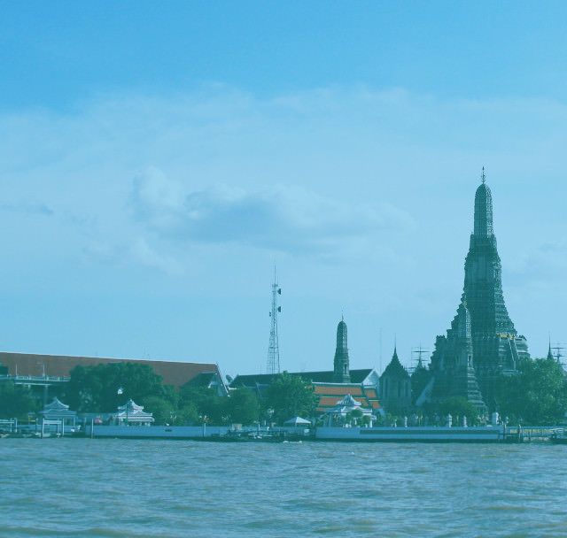
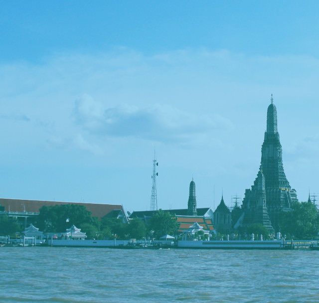

プログラミングで
人生の安定を手にいれよう

※受講料金は実質０円です。詳しくは請求資料をどうぞ。

エンジニア需要の高まりに伴い、
プログラミングスクールが増えています。
しかしそこでの学習の先は、
提携して決められた就職先に就職すること。
これで本当にいいのですか？
日本人エンジニアはアメリカと比べて
給料が格段に低い。
その理由がここにあり、
エンジニアは、自分の給料を
コントロールすべきなのです。
スキルを身につけたエンジニアは、
人生をコントロールすることでより自由に。
そこで必要なのが「稼ぐ力」です。
ABOUT

基礎的な
プログラミングスキル

案件獲得に必要な
営業力

見積もり作成から
納品までの知識

自分の付加価値を
高めるスキル

フリーランス同士の
横のつながり


【バンコク渡航前１ヶ月】
事前課題で基礎知識を学ぶ
【バンコク渡航後】
実践的に稼ぐことに特化した学習
【バンコク帰国後】
講座実施後の案件獲得サポート
iSaraの学習では、エンジニアとして
「稼ぐ」ために必要な能力を身につけます。


これらを教えるのがiSaraです。

他のプログラミングスクールとは違い、実際にフリーランスとして活動しているエンジニアが直接講師を務めます。

フリーランスにとって最短の学習法は「実践」。iSaraでは日案件を通して学びます。現役フリーランサーの案件サポートに加え、クラウドソーシングを活用。初心者の自分じゃ無理と思うかもですが、現役フリーランスがサポートしますので大丈夫。

講座費用２５８，０００円以上の金額が稼げるまで「永久サポート延長があります。」
iSaraは講座が終わって終了ではありません。
参加メンバーのチャットグループを作り、帰国後も継続的に案件参加できるようになります。
また、チームで働くことで継続的に稼ぎやすい仕組みづくりも構築しております。
事前課題ができない人はお断りしております。
iSaraでは無料で学べるプログラミング基礎知識は教えません。事前課題一覧はメールで送りつつ、
チャットサポートのみ。従って、本気で取り組まないと結果は出ません。
実際にフリーランスとして活躍している
エンジニアが立ち上げました

フリーランス講師
染谷 佳祐
ISARA(THAILAND)CO.,LTD.の代表です。学生起業の後にリクルートへ就職、その後独立し、海外移住しました。今はフリーランスとしてリモートワークで日本円を稼ぎ、外国通貨に変えて使い、海外を旅してます。営業、ブログPVアップ（最高月刊）、ビジネス構築が専門です。

フリーランス講師
成田 雄輝
バンコクのシェアハウスのオーナーをやりながら一年の大半をタイで過ごしています。大学時代から今に至るまでネットだけで生計を立てているので、自由歴だけは講師陣の中で最長です ! 母親がタイ人ということもありタイには精通してますので、こちらでの生活のサポートはお任せください。

フリーランスエンジニア
坂内 学
アドバイザーとして参画しました。新卒で海外就職して１１ヶ月後に退職。今は日本にいたり海外にいたりでゆるくフリーランスをしています。
お仕事はWebマーケティングとプログラミングが専門領域です。

Q&A

リモートワークという言葉がありますが、弊社では何も気にしません。エンジニアに求めるのは、快適なコミュニケーションと信頼と成果物のみ。
Kredo IT Abroad.Inc 代表取締役 横田 猛夫

社内でスキルのある人材を採用するのは難しい。外部パートナーとして継続的に依頼できるフリーランスには助かっています。
SAPEUR.Inc 代表取締役 佐藤 陽

プログラマーが足りていないときに外部リソースとして、フリーランスに発注しています。今はどこの会社でもエンジニアが不足していますね。
株式会社BeautifulWoks 代表取締役 浅田 百合


iSaraでは受講料を稼げることを保障しています。従って、事前コンサル時点で簡単なテストを実施し、場合によってはお断りをしております。（テストの内容はPCの基礎知識に関するテストですので、普段からパソコンを利用する方でしたら問題ありません。テストはもちろん無料ですので、まずはお問い合わせください。）

0から始めるプログラミング事前学習講座、環境構築の事前学習、jQueryの事前学習講座、Bootstrapの事前学習講座、PHP / Mysqlの事前講座


現役フリーランスがサポートします。

ここまで見ると、iSaraは日本でも実施可能に見えます。
しかし、バンコクを選んだのには理由があります。
 

講座費用258,000円以上の金額が稼げるまで、「永久サポート延長」。リスク０で参加できます。
参加費以上の金額が稼げるまで「永久サポート」参加費用は実質０円です。
iSaraフリーランスコミュニティー参加権利。案件紹介や、新施設OPENの際の優先利用権が受けられます。
フリーランスエンジニアになる為の動画講義を無料プレゼント
講座参加後のシェアハウス利用権利（ドンムアン空港至近のため、とても便利です。）
フリーランス講師による個別コンサル（渡航前の週１回）